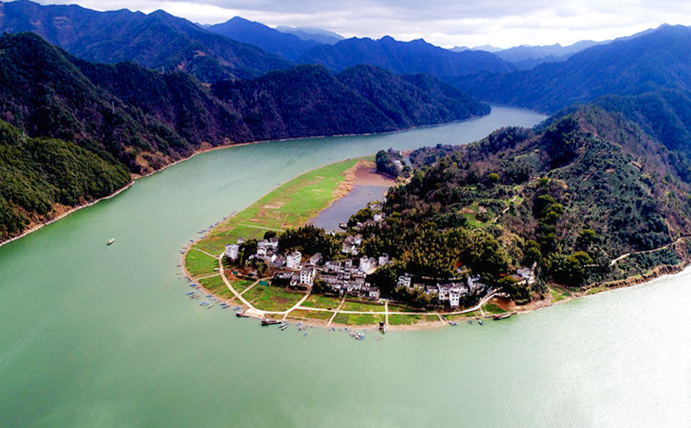

·新安江介绍
新安江，又称徽港，发源于安徽徽州（今黄山市）休宁县境内，东入浙江省西部，经淳安至建德与兰江汇合后为钱塘江干流桐江段、富春江段，东北流入钱塘江，是钱塘江正源。干流长373公里，流域面积1.1万多平方公里。
新安江水利资源较为丰富，流域内有丰乐、新安江两座水库。解放前其航运由屯溪直达杭州，解放后水库截断航线，航运几乎停顿。
沿途有屯溪老街、新安江山水画廊、花山谜窟、千岛湖等人文、自然景观，作为国家级风景名胜区向有“奇山异水，天下独绝”之称。
这里曾是几代徽州人走出大山追寻梦想的最佳通道，她成就了众多富甲天下的徽商巨贾、名噪一时的文人雅士和至今还令人津津乐道的新安画派。徽文化、徽医、徽剧（京剧的母本）、程朱理学、徽墨、歙砚等耳熟能详的徽州元素，随着一条条新安江上远去的小舟，融进了博大精深的中华文化之中。
- 